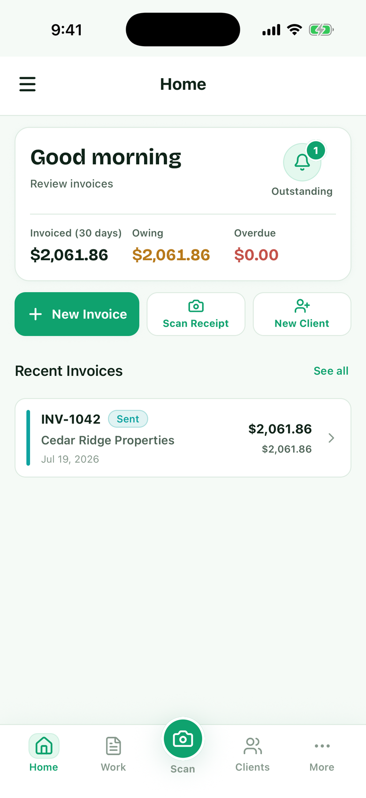
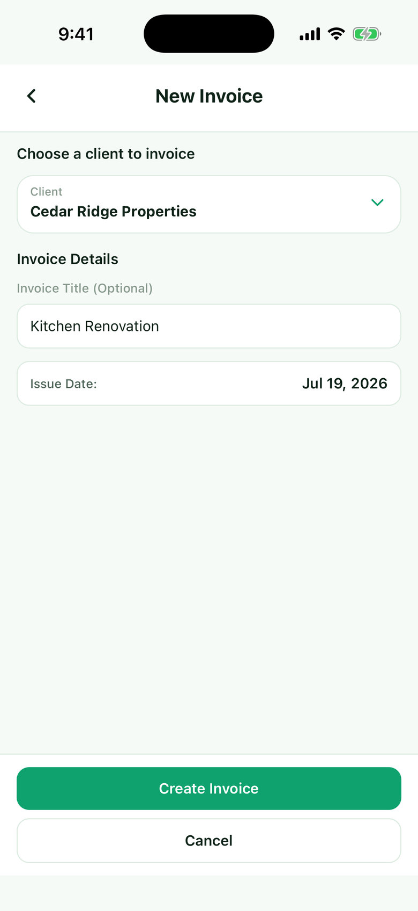
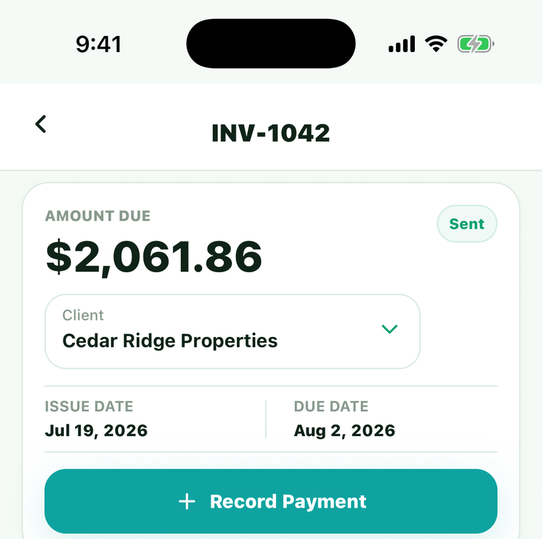
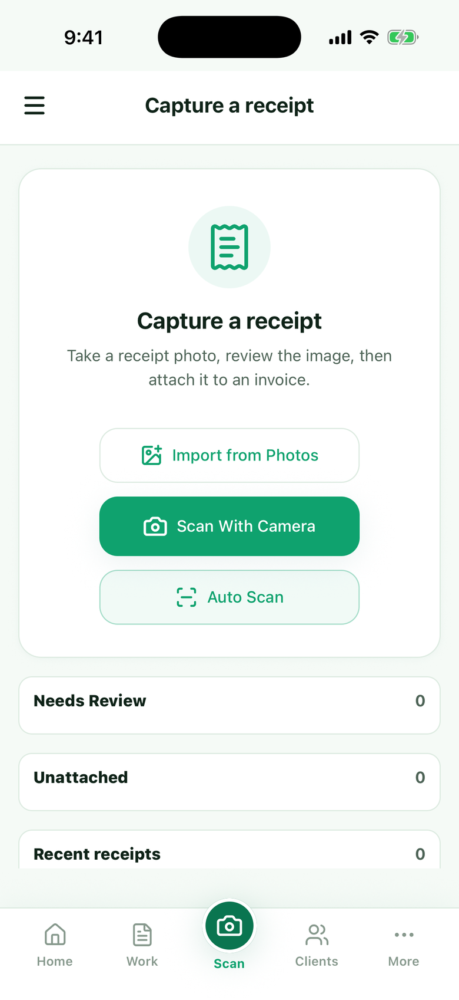
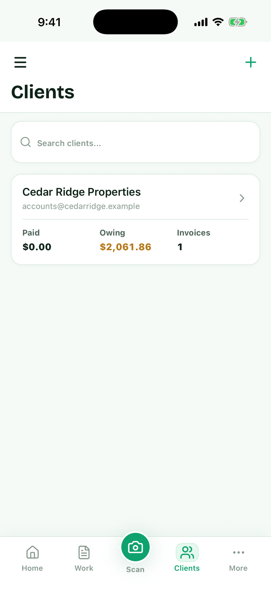

Create professional estimates and invoices
Build clear estimates and invoices with line items, tax rules, and polished PDFs your clients can read on the first pass—without waiting until you’re back at a desk.
BillingBird helps contractors and service professionals create estimates and invoices, scan receipts, record manual payments, and keep client balances clear—from the office or the job site.
Your billing records stay on your device, with optional private iCloud backup.
iPadOS, macOS, Android, and Windows support is planned.

Five real screens from the iPhone app. No autoplay carousel—browse at your pace.




Build clear estimates and invoices with line items, tax rules, and polished PDFs your clients can read on the first pass—without waiting until you’re back at a desk.
See what’s billed, due, and overdue. Record manual payments as they come in, and capture receipts while you’re still on site so expenses don’t vanish into a truck console.
Your active books live on your iPhone. Optional private iCloud backup uses your Apple account—not a readable DeadStick bookkeeping database.
The launch version lets you record manual payments. Online payment collection is planned for a later release.
No BillingBird account is required for day-to-day work. DeadStick Digital does not operate a server-side bookkeeping database of your invoices, receipts, clients, or reports. Apple provides App Store and optional iCloud services; RevenueCat may provide subscription entitlement checks separately from your records.
iPadOS, macOS, Android, and Windows support is planned. Current working records and data handling described here apply to the iPhone launch.
No. BillingBird is built so your working records live on your device. Optional private iCloud backup uses your Apple account when you enable it.
Yes. Core invoicing, receipt capture, client records, and manual payment logging are designed to keep working without a network connection. Features that depend on Apple services (such as iCloud backup or App Store purchases) need connectivity when you use them.
Active books stay in private app storage on your iPhone. If you enable optional private iCloud backup, an additional copy is stored in your own Apple account. DeadStick Digital does not receive a readable server-side copy of those bookkeeping records.
Yes. You can export professional PDFs for clients and a full .billingbird archive of your records from Settings when you need a portable copy.
The launch version lets you record manual payments. Online payment collection is planned for a later release.
BillingBird is launching first on iPhone (iOS 17 or later). iPadOS, macOS, Android, and Windows support is planned.
BillingBird is not yet available for download. Check back here for the public launch on iPhone.